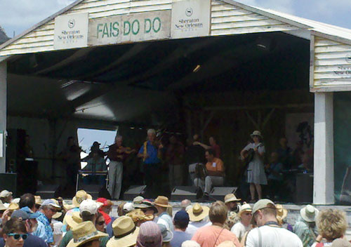
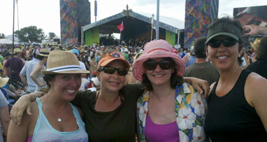
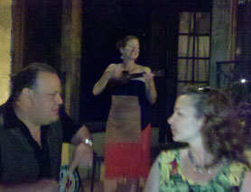
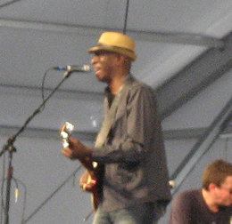
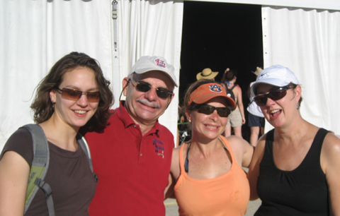

April 29 - May 1, 2011
| I think this is my 12th Jazz Fest - not in a
row, I missed 1998 and last year. So I've been every year since 1997
except those two years. Most of those years have been with my buddy
Amy. For the past several years, the Jazz Fest team has included
Amy's husband Julio and our friend Laura. A lot has changed about
our Jazz Fest experience over the years - I'm enjoying the slower, calmer
version we do now much better! |
|
 |
 |
| Enjoying some great traditional Cajun music at the Fais Do Do stage. | The girls in our group - we were joined by Julio's friends
from Canada who held up well in the heat! |
 |
 |
| Out to dinner on Saturday night. What a memorable evening it was! Amy's Dad's friend was a great entertainment, then we got to sit outside at a lovely restaurant where we made friends with the ukulele player and enjoyed a very nice meal. |
My favorite act of this year's fest was Keb' Mo'
I've seen him in concert before and he's always great. |
|
|
|
 |
I hadn't seen Doug & Myra for YEARS. We all used to live a few miles apart and get together often, now we've gone nearly a decade without getting together. It was really a treat to see them and Myra's niece Eva. |